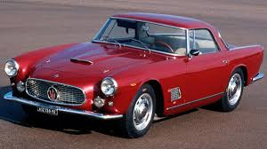

Aqui tenemos un Bugati de 1918 de dos puertas negro muy elegante que podria ser suyo por $200,000 es de muy buena calidad biene importado desde Italia todo es original se conduce como recien salido de la fabrica
Aqui tenemos un hermoso Ferrari de 1978 el cual los creadores llamaron Borsalino por la persona que lo creo, es de color rojo con un hermoso interior de color blanco el cual es de cuero, es bastante elegante de buen manejo y podra ser suyo por $300,000

Aqui tenemos un preferido por los italianos, importado desde Venecia traemos hasta usted un hermoso Maserati rojo modelo 1985 el cual solo existen 300 unidades en el mundo, es de color rojo con un hermoso interior de color blanco de cuero, capaz de alcanzar los 100 km en 3.1 segundos puede ser suyo por $350,000
